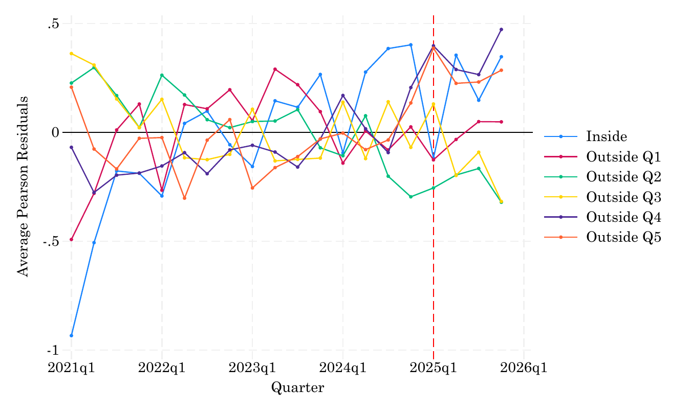
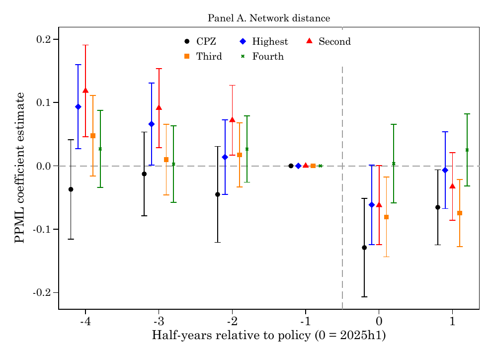
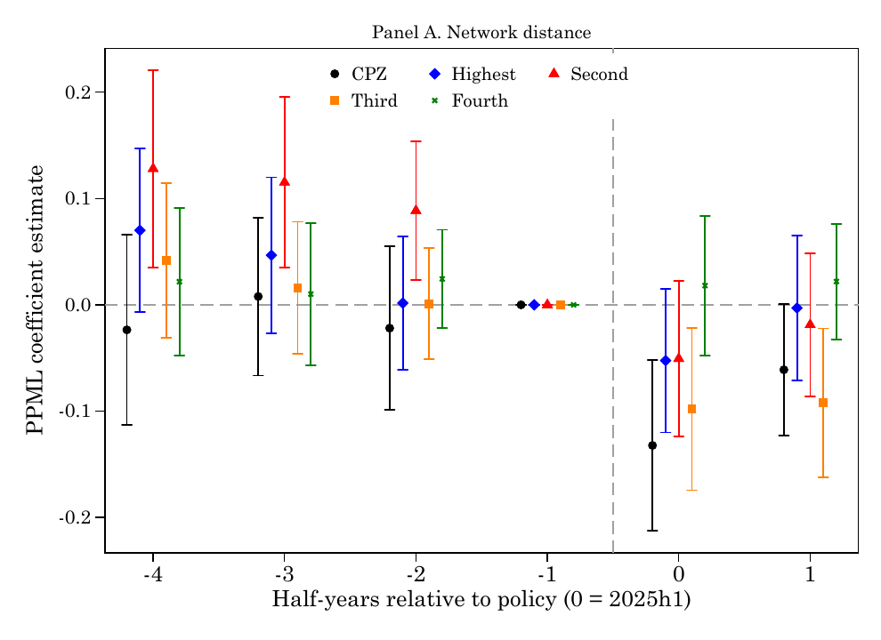

NYC Congestion Pricing
NYC Congestion Pricing Accident Impact Evaluation
Residual construction
All four specifications are estimated with PPML fixed-effect models.
For each model, the fitted mean is predicted as mu_hat,
and the Pearson residual is calculated as
(accidents_total - mu_hat) / sqrt(mu_hat).
Base FE: zone and year-month fixed effects. Unit trend: Base FE plus zone-specific linear time trends. Borough-time FE: Unit trend plus borough-by-year-month fixed effects. Post trend: Unit trend plus zone-specific post-treatment linear trends.
Residuals are then averaged by quarter and exposure group to produce the diagnostic plots below.
How to read the figures
Each line is the average Pearson residual for one exposure group. The black horizontal line marks zero residual, and the red vertical line marks the beginning of the post period at 2025q1.
The useful comparison is not only whether the CC zone moves after treatment, but whether that movement is distinct from the outside quintiles and whether it changes consistently across exposure rank.
Quick viewer
Switch between measures and model specifications without scrolling through all plots.

Baseline residuals from a model with zone and year-month fixed effects.
Network distance
Distance from each zone to the congestion pricing boundary. Q1 is nearest; Q5 is farthest.
Cook co-occurrence
Exposure based on Cook et al. style co-occurrence scores mapped to road segments and zones.
Trip pass-through
Exposure based on routed taxi trips passing through each zone on paths linked to the CBD.
Dist x trips
A distance-anchored exposure index adjusted by observed CBD-linked taxi trip share.
Event-study accident effects
Half-year event-study estimates using network-distance Q5 as the comparison group.
The weighted estimates use each taxi zone's average monthly accident count before January 2025 as the probability weight, then apply the same PPML specification with zone and year-month fixed effects.

PPML event-study coefficient estimates by half-year relative to the 2025h1 policy period.

Weighted PPML event-study coefficient estimates by half-year relative to the 2025h1 policy period.